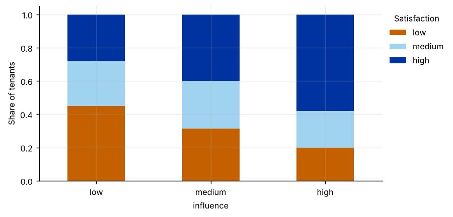
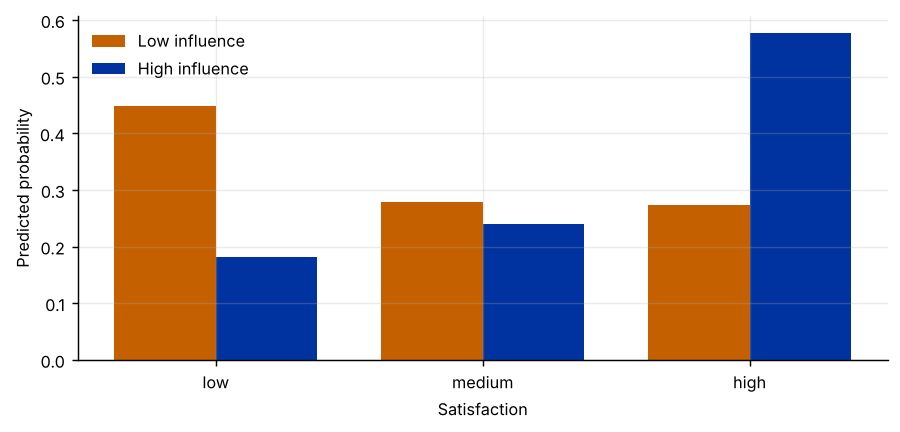

Run this model on your own data in Open Econometric Systems →
Step 1The question and the model
What makes tenants more satisfied with their housing: a say in how the building is managed, the type of building, or contact with neighbours? Madsen (1976) surveyed 1,681 tenants of Copenhagen housing estates and recorded satisfaction as low, medium or high. The ordered model assumes there is a latent (unobserved) satisfaction \(y^*\) that depends linearly on the regressors, and that we see only which of \(J\) ordered ranges it falls in:
where \(F\) is the logistic (ordered logit) or normal (ordered probit) distribution function and \(c_1 < \dots < c_{J-1}\) are the cut-points. There is no intercept: the cut-points play that role. A positive coefficient moves the latent variable up and so raises the probability of the highest category.
| Variable in the file | Definition |
|---|---|
Sat |
satisfaction: 1 = low, 2 = medium, 3 = high |
InflMedium, InflHigh |
influence on management: medium or high (low is the base) |
TypeApartment, TypeAtrium, TypeTerrace |
type of building (tower block is the base) |
ContHigh |
1 if the tenant has high contact with other residents |
Before you estimate anything
- Is the order meaningful? Low, medium, high is. Occupations or colours are not: use a multinomial model.
- Does every category have enough observations? Merge sparse categories (a category with fewer than about 5 to 10 observations makes the cut-points unstable).
- Will you test the proportional-odds assumption? The model gives each regressor one coefficient for all cut-points. This is a strong restriction that the data can contradict (Step 6).
How to write it: model section
Satisfaction is recorded in three ordered categories, so we estimate an ordered logit by maximum likelihood. The model assumes a latent satisfaction that depends linearly on the perceived influence on management, the type of building and contact with other residents, and that tenants report the category in which this latent variable falls. We report odds ratios and average marginal effects on the probability of each category, and we test the proportional-odds assumption with the Brant test.
Step 2Load the data and look at it first
import warnings; warnings.filterwarnings("ignore")
import numpy as np, pandas as pd
import matplotlib.pyplot as plt
import statsmodels.api as sm
from statsmodels.miscmodels.ordinal_model import OrderedModel
from scipy import stats
d = pd.read_csv("housing.csv")
X = d[["InflMedium", "InflHigh", "TypeApartment", "TypeAtrium", "TypeTerrace", "ContHigh"]]
names = {1: "low", 2: "medium", 3: "high"}
print(f"{len(d)} tenants")
print("Satisfaction")
print(pd.DataFrame({"count": d.Sat.value_counts().sort_index(), "share": d.Sat.value_counts(normalize=True).sort_index().round(3)}).rename(index=names))
infl = np.select([d.InflHigh == 1, d.InflMedium == 1], ["high", "medium"], "low")
print("\nShare of tenants in each satisfaction category, by influence on management")
print(pd.crosstab(pd.Series(infl, name="influence"), d.Sat.map(names), normalize="index")[["low", "medium", "high"]].loc[["low", "medium", "high"]].round(3))
ct = pd.crosstab(pd.Series(infl, name="influence"), d.Sat.map(names), normalize="index")[["low", "medium", "high"]].loc[["low", "medium", "high"]]
ct.plot(kind="bar", stacked=True, color=["#c46000", "#9fd3f0", "#0033a0"], figsize=(7, 3.4), rot=0); plt.ylabel("Share of tenants"); plt.legend(title="Satisfaction", frameon=False, bbox_to_anchor=(1, 1))
plt.tight_layout()1681 tenants
Satisfaction
count share
Sat
low 567 0.337
medium 446 0.265
high 668 0.397
Share of tenants in each satisfaction category, by influence on management
Sat low medium high
influence
low 0.450 0.271 0.279
medium 0.313 0.287 0.401
high 0.200 0.220 0.580
How to read it
Satisfaction is spread over the three categories (34% low, 27% medium, 40% high). It rises with the tenant's influence on management: among tenants with low influence only 28% are highly satisfied, against 58% of those with high influence. The question for the model is how much of this gap survives once the building type and contact with neighbours are held fixed.
Step 3Why not OLS, and why not a multinomial model?
y = d.Sat
ols = sm.OLS(y, sm.add_constant(X)).fit(cov_type="HC1")
print("OLS on the codes 1, 2, 3 (treats the gaps between categories as equal)")
print(ols.summary().tables[1])
# a multinomial model uses no ordering and needs a slope for each regressor and each category beyond the first
mn = sm.MNLogit(y, sm.add_constant(X)).fit(disp=0)
print(f"\nParameters: ordered logit {X.shape[1] + 2}; multinomial logit {mn.params.size}")OLS on the codes 1, 2, 3 (treats the gaps between categories as equal)
=================================================================================
coef std err z P>|z| [0.025 0.975]
---------------------------------------------------------------------------------
const 1.9510 0.054 36.394 0.000 1.846 2.056
InflMedium 0.2513 0.046 5.483 0.000 0.161 0.341
InflHigh 0.5537 0.052 10.711 0.000 0.452 0.655
TypeApartment -0.2455 0.051 -4.838 0.000 -0.345 -0.146
TypeAtrium -0.1484 0.067 -2.231 0.026 -0.279 -0.018
TypeTerrace -0.4726 0.064 -7.384 0.000 -0.598 -0.347
ContHigh 0.1584 0.041 3.858 0.000 0.078 0.239
=================================================================================
Parameters: ordered logit 8; multinomial logit 14How to read it
OLS gives a signed effect on the average code, for example about 0.55 more for high influence than for low, but that number means something only if the step from low to medium is worth the same as the step from medium to high, and the model can predict values outside 1 to 3. The multinomial logit makes no such assumption but needs twelve slopes (six regressors times two categories) and two intercepts, 14 parameters in all, against six slopes and two cut-points (8) for the ordered model, and it ignores the ordering, so it gives up power. The ordered model is the middle way: it uses the ordering, needs one slope per regressor and gives probabilities for every category.
Step 4The ordered logit
mod = OrderedModel(pd.Categorical(y, ordered=True), X, distr="logit")
res = mod.fit(method="bfgs", disp=0, maxiter=500)
k = X.shape[1]
beta, se = res.params.values[:k], res.bse.values[:k]
raw = res.params.values[k:]
cuts = raw[0] + np.r_[0.0, np.cumsum(np.exp(raw[1:]))] # statsmodels reports the first cut-point and log-increments
tab = pd.DataFrame({"coef": beta, "std err": se, "z": beta / se, "p-value": 2 * stats.norm.sf(abs(beta / se))}, index=X.columns)
print(tab.round(4).to_string())
print("\nCut-points:", cuts.round(4))
ll0 = sum(n * np.log(n / len(y)) for n in y.value_counts())
lr = 2 * (res.llf - ll0)
print(f"\nLog-likelihood = {res.llf:.3f}; deviance = {-2 * res.llf:.3f}")
print(f"Likelihood-ratio test that all slopes are zero: chi2({k}) = {lr:.1f}, p = {stats.chi2.sf(lr, k):.2e}; McFadden pseudo R2 = {1 - res.llf / ll0:.3f}")coef std err z p-value InflMedium 0.5664 0.1047 5.4118 0.0000 InflHigh 1.2888 0.1272 10.1355 0.0000 TypeApartment -0.5724 0.1192 -4.8003 0.0000 TypeAtrium -0.3662 0.1552 -2.3598 0.0183 TypeTerrace -1.0910 0.1515 -7.2021 0.0000 ContHigh 0.3603 0.0955 3.7718 0.0002 Cut-points: [-0.4961 0.6907] Log-likelihood = -1739.575; deviance = 3479.149 Likelihood-ratio test that all slopes are zero: chi2(6) = 169.7, p = 5.14e-34; McFadden pseudo R2 = 0.047
How to read it
All coefficients are significant at the 5% level. Influence on management has the strongest effect: high influence raises latent satisfaction by 1.29 relative to low influence, medium influence by 0.57. Living in an apartment, atrium house or terrace house lowers satisfaction relative to a tower block, with terraces the lowest (−1.09), and high contact with neighbours raises it by 0.36. The two cut-points (−0.50 and 0.69) are the thresholds on the latent scale: a tenant whose index is below −0.50 reports low satisfaction, between −0.50 and 0.69 medium and above 0.69 high. The model is strongly better than the category frequencies (chi-squared 170 on 6 degrees of freedom). The pseudo R-squared is low (0.05), which is normal for individual survey data: satisfaction depends on much that is not in the model.
Step 5Odds ratios
orr = pd.DataFrame({"odds ratio": np.exp(beta), "95% CI low": np.exp(beta - 1.96 * se), "95% CI high": np.exp(beta + 1.96 * se)}, index=X.columns)
print("Proportional odds ratios (the odds of being in a higher category)")
print(orr.round(3).to_string())Proportional odds ratios (the odds of being in a higher category)
odds ratio 95% CI low 95% CI high
InflMedium 1.762 1.435 2.163
InflHigh 3.628 2.828 4.655
TypeApartment 0.564 0.447 0.713
TypeAtrium 0.693 0.512 0.940
TypeTerrace 0.336 0.250 0.452
ContHigh 1.434 1.189 1.729How to read it
In the ordered logit, \(e^{\beta}\) is the factor by which the odds of being in a higher category rather than in the current one or below change. High influence has an odds ratio of 3.63: the odds of being more satisfied are 3.6 times as high as for low influence, whether we compare high with medium-or-low or high-or-medium with low. This single number for both comparisons is the proportional-odds assumption, tested in Step 6. The confidence interval (2.83 to 4.66) is narrow because the sample is large.
Step 6Marginal effects on every category
beta_v = beta
def probs(M, b=beta_v, c=cuts):
F = lambda z: 1 / (1 + np.exp(-z))
xb = M @ b
cum = np.column_stack([np.zeros(len(xb)), F(c[0] - xb), F(c[1] - xb), np.ones(len(xb))])
return np.diff(cum, axis=1)
Xn = X.to_numpy(float)
rows = []
for i, v in enumerate(X.columns):
X1, X0 = Xn.copy(), Xn.copy(); X1[:, i], X0[:, i] = 1, 0
rows.append((probs(X1) - probs(X0)).mean(axis=0))
ame = pd.DataFrame(rows, index=X.columns, columns=["low", "medium", "high"])
print("Average marginal effects (discrete change 0 to 1) on the probability of each category")
print(ame.round(3).to_string())
print("\nRows add to zero:", ame.sum(axis=1).round(6).to_dict())
fig, ax = plt.subplots(figsize=(7, 3.4))
base = X.mean().copy()
for lab, vals, c in [("Low influence", dict(InflMedium=0, InflHigh=0), "#c46000"), ("High influence", dict(InflMedium=0, InflHigh=1), "#0033a0")]:
M = pd.DataFrame([base]); [M.__setitem__(k_, v_) for k_, v_ in vals.items()]
pr = probs(M.to_numpy(float))[0]
ax.bar(np.arange(3) + (0.0 if "Low" in lab else 0.38), pr, width=.38, color=c, label=lab)
ax.set_xticks(np.arange(3) + .19); ax.set_xticklabels(["low", "medium", "high"]); ax.set_xlabel("Satisfaction"); ax.set_ylabel("Predicted probability"); ax.legend(frameon=False)
plt.tight_layout()Average marginal effects (discrete change 0 to 1) on the probability of each category
low medium high
InflMedium -0.115 -0.008 0.124
InflHigh -0.237 -0.059 0.296
TypeApartment 0.117 0.007 -0.124
TypeAtrium 0.078 0.000 -0.078
TypeTerrace 0.243 -0.024 -0.219
ContHigh -0.075 -0.004 0.079
Rows add to zero: {'InflMedium': -0.0, 'InflHigh': 0.0, 'TypeApartment': -0.0, 'TypeAtrium': -0.0, 'TypeTerrace': 0.0, 'ContHigh': 0.0}
How to read it
An ordered-model coefficient does not tell the size of the effect on any one category, and the effect on the middle category can even have the opposite sign to what the coefficient suggests. The marginal effects do. Moving a tenant from low to high influence raises the probability of high satisfaction by 0.30 and lowers the probabilities of low and medium by 0.24 and 0.06. Moving from low to medium influence raises high satisfaction by 0.12 and lowers low by 0.12, while the medium category barely moves (−0.01). Each row adds to zero: what the top category gains the others lose. The figure shows the full distribution for a tenant with average characteristics: high influence shifts probability from the low category to the high one.
How to write it: main result
Perceived influence on management is the strongest determinant of satisfaction. Compared with tenants with little influence, those with high influence are 29.6 percentage points more likely to report high satisfaction and 23.7 points less likely to report low satisfaction (average marginal effects; odds ratio 3.63, 95% confidence interval 2.83 to 4.66). Tenants in towers are more satisfied than those in apartments, atrium houses or terraces, and high contact with neighbours raises the probability of high satisfaction.
Step 7The proportional-odds assumption
# Fit a separate binary logit for each cut-point, 'satisfaction above low' and 'satisfaction above medium'.
# If the proportional-odds assumption holds, the slopes should be close to each other.
Xc = sm.add_constant(X)
b1 = sm.Logit((y > 1).astype(int), Xc).fit(disp=0)
b2 = sm.Logit((y > 2).astype(int), Xc).fit(disp=0)
cmp_ = pd.DataFrame({"y > low": b1.params, "y > medium": b2.params, "ordered logit": pd.Series(beta, index=X.columns)}).drop("const")
print(cmp_.round(3).to_string())
# Brant (1990) Wald test: are the slopes equal across the two binary logits?
p1, p2 = b1.predict(Xc).values, b2.predict(Xc).values
inv1 = np.linalg.inv(Xc.T.values @ (Xc.values * (p1 * (1 - p1))[:, None]))
inv2 = np.linalg.inv(Xc.T.values @ (Xc.values * (p2 * (1 - p2))[:, None]))
V11, V22 = b1.cov_params().values[1:, 1:], b2.cov_params().values[1:, 1:]
W12 = p2 * (1 - p1)
V12 = (inv1 @ (Xc.T.values @ (Xc.values * W12[:, None])) @ inv2)[1:, 1:]
dv = b1.params.values[1:] - b2.params.values[1:]
Vd = V11 + V22 - V12 - V12.T
W = dv @ np.linalg.solve(Vd, dv)
print(f"\nBrant test of proportional odds: chi2({k}) = {W:.2f}, p = {stats.chi2.sf(W, k):.3f}")y > low y > medium ordered logit ContHigh 0.430 0.313 0.360 InflHigh 1.243 1.304 1.289 InflMedium 0.601 0.536 0.566 TypeApartment -0.616 -0.528 -0.572 TypeAtrium -0.180 -0.487 -0.366 TypeTerrace -1.081 -1.111 -1.091 Brant test of proportional odds: chi2(6) = 8.53, p = 0.201
How to read it
The proportional-odds model forces one slope per regressor. If it were wrong, the slopes from the two binary comparisons would differ. They are similar: for high influence 1.24 against 1.30 and for terrace −1.08 against −1.11, and the ordered-logit values (1.29 and −1.09) lie close to both. The largest gap is for atrium houses (−0.18 against −0.49), but the standard error of that coefficient is 0.16, so the gap is within sampling noise. The Brant test confirms it, with a p-value of about 0.20, so there is no evidence against proportional odds. If the test rejects, the usual remedies are a generalised ordered logit that lets some slopes differ across cut-points, or merging categories. A caution: with large samples the Brant test rejects for tiny differences, so look at the size of the differences as well as the p-value.
Step 8Logit or probit? A robustness check
pro = OrderedModel(pd.Categorical(y, ordered=True), X, distr="probit").fit(method="bfgs", disp=0, maxiter=500)
bp = pro.params.values[:k]
cmp2 = pd.DataFrame({"logit": beta, "probit": bp, "ratio": beta / bp}, index=X.columns)
print(cmp2.round(3).to_string())
rawp = pro.params.values[k:]; cuts_p = rawp[0] + np.r_[0.0, np.cumsum(np.exp(rawp[1:]))]
def probs_p(M):
xb = M @ bp
cum = np.column_stack([np.zeros(len(xb)), stats.norm.cdf(cuts_p[0] - xb), stats.norm.cdf(cuts_p[1] - xb), np.ones(len(xb))])
return np.diff(cum, axis=1)
rp = []
for i in range(k):
X1, X0 = Xn.copy(), Xn.copy(); X1[:, i], X0[:, i] = 1, 0
rp.append((probs_p(X1) - probs_p(X0)).mean(axis=0)[2])
print("\nAverage marginal effect on Pr(high satisfaction)")
print(pd.DataFrame({"logit": ame["high"].values, "probit": rp}, index=X.columns).round(3).to_string())
print(f"\nLog-likelihood: logit = {res.llf:.3f}, probit = {pro.llf:.3f}") logit probit ratio
InflMedium 0.566 0.346 1.635
InflHigh 1.289 0.783 1.646
TypeApartment -0.572 -0.347 1.647
TypeAtrium -0.366 -0.218 1.680
TypeTerrace -1.091 -0.664 1.643
ContHigh 0.360 0.222 1.621
Average marginal effect on Pr(high satisfaction)
logit probit
InflMedium 0.124 0.124
InflHigh 0.296 0.293
TypeApartment -0.124 -0.124
TypeAtrium -0.078 -0.076
TypeTerrace -0.219 -0.221
ContHigh 0.079 0.080
Log-likelihood: logit = -1739.575, probit = -1739.844How to read it
Probit coefficients are smaller than logit coefficients by a factor of about 1.6 to 1.7, because the logistic error has a larger variance than the normal, so only marginal effects can be compared across the two models. The average marginal effects on high satisfaction agree to the second decimal, and the log-likelihoods differ by about 0.3. As in the binary case, the choice between logit and probit does not change the conclusions here; logit has the advantage of odds ratios and of the Brant test.
Step 9What to report in the paper
Report the number of observations and the share in each category; the coefficient table (without an intercept) and the cut-points; the odds ratios if your field reads them; the average marginal effects on every category, or at least on the highest and lowest; the likelihood-ratio test and the pseudo R-squared; the Brant test; and a statement of the link function and standard errors used.
How to write it: results and robustness
Table 1 reports the ordered logit estimates for 1,681 tenants. The model is jointly significant (likelihood-ratio chi-squared of 169.7 with 6 degrees of freedom) and the pseudo R-squared is 0.05, which is typical for individual survey data. The Brant test does not reject the proportional-odds assumption (chi-squared 8.5, p = 0.20), and the slopes from the separate binary logits are close to the ordered-logit slopes. An ordered probit gives average marginal effects that agree with the logit to the second decimal.
Step 10Common mistakes
Mistakes to avoid
- Reading a coefficient as an effect on a category. The coefficient moves the latent variable. The effect on the middle category can have either sign; report marginal effects for every category.
- Including a constant. The cut-points replace the intercept. Dummies that add up to one cause the same problem: drop one.
- Forgetting the sign convention. Some programs (Stata
ologit, Rpolr, statsmodels) define \(\Pr(y \le j) = F(c_j - x'\beta)\), so a positive coefficient means higher categories; others report the opposite sign. State the convention. - Ignoring proportional odds. If the Brant test rejects, one slope per regressor is wrong. Use a generalised ordered model, or check which regressor causes the rejection.
- Merging categories to save the test. Collapsing categories until the Brant test passes is a form of specification search. Say what you did.
- Treating the cut-points as unimportant. They show where the categories lie on the latent scale. Very close cut-points mean that the middle category is hardly distinguishable.
- Using an ordered model for an unordered outcome. If the order is not meaningful, estimate a multinomial model.